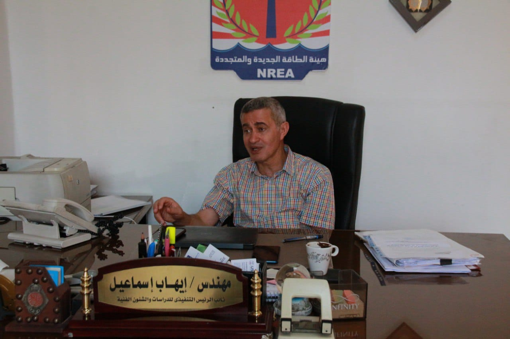

من الوقود الأحفوري إلى الطاقة النظيفة: رحلة نحو مستقبل أخضر
- في ظل التحديات البيئية والاقتصادية المتزايدة، أصبح التحول إلى الطاقة المتجددة ضرورة ملحة أكثر من أي وقت مضى، ومن خلال هذا الحوار، نناقش مع الخبير و نائب رئيس هيئة الطاقة الجديدة والمتجددة المهندس "إيهاب إسماعيل " ، أهم أنواع الطاقة المتجددة المستخدمة حالياً، ونستعرض الفوائد والتحديات المرتبطة بها، بالإضافة إلى استكشاف الابتكارات الجديدة والسياسات الحكومية الداعمة التي تسهم في تعزيز هذا التحول الحيوي نحو مستقبل أكثر نظافة وأماناً للأجيال القادمة.
- "حالياً، تعد الطاقة الشمسية، طاقة الرياح، والطاقة الكهرومائية من أكثر أنواع الطاقة المتجددة استخداماً بفضل ميزاتها الفريدة وكفاءتها المتزايدة، وتطورت تقنيات الألواح الشمسية بشكل ملحوظ، لتصبح أكثر كفاءة في تحويل ضوء الشمس إلى طاقة كهربائية وأقل تكلفة في الإنتاج والتركيب. هذا التطور جعل الطاقة الشمسية خياراً شائعاً للمنازل والمنشآت الصناعية على حد سواء، خاصة في المناطق التي تتمتع بأشعة شمس قوية ومستمرة طوال العام.
- من جهة أخرى، طاقة الرياح أصبحت فعالة بشكل كبير في توليد الكهرباء في المناطق التي تهب فيها الرياح بقوة وانتظام، مثل السواحل والسهول المفتوحة. والتوربينات الهوائية الحديثة أصبحت أكثر كفاءة في تحويل طاقة الرياح إلى كهرباء، وهي قادرة على العمل في مجموعة واسعة من ظروف الرياح، مما يجعلها خياراً موثوقاً لإنتاج الطاقة النظيفة.
- أما الطاقة الكهرومائية، فتعتبر من أقدم وأكثر الطرق استقراراً في إنتاج الطاقة المتجددة، وتعتمد هذه التقنية على استخدام تدفق المياه من الأنهار والسدود لتشغيل التوربينات التي تولد الكهرباء. هذا النوع من الطاقة يتميز بالاستمرارية والقدرة على إنتاج كميات كبيرة من الكهرباء بشكل مستقر ودون انقطاع، مما يجعله مصدراً موثوقاً للطاقة في العديد من البلدان. بالإضافة إلى ذلك، محطات الطاقة الكهرومائية يمكن أن توفر خدمات إضافية مثل التحكم في الفيضانات وتوفير المياه للري والاستخدامات الصناعية.

- في السنوات الأخيرة، انخفضت تكلفة الطاقة المتجددة بشكل كبير، مما يجعلها منافسة للطاقة التقليدية. بالرغم من أن تكاليف الإنشاء قد تكون مرتفعة، إلا أن التشغيل والصيانة عادة ما تكون أقل تكلفة. ومع تقدم تقنيات التخزين، أصبح أداء الطاقة المتجددة أكثر استقراراً وقابلية للمنافسة.
- من أكبر التحديات التي نواجهها هو الاستثمار الكبير المطلوب في البنية التحتية، فبناء محطات الطاقة الشمسية أو توربينات الرياح يحتاج إلى رأس مال كبير، وغالباً ما يتطلب دعماً حكومياً أو تمويلاً خاصاً. بالإضافة إلى ذلك، لا تزال هناك مشكلات تقنية تتعلق بكيفية تخزين ونقل الطاقة المتجددة بشكل فعال، مثل تطوير بطاريات عالية السعة يمكنها تخزين الطاقة لفترات طويلة دون فقدان كبير.
- أيضاً، بعض الصناعات التقليدية والمصالح الاقتصادية المرتبطة بالوقود الأحفوري تعارض التحول إلى الطاقة المتجددة، حيث أن هذه الصناعات قد تتضرر مالياً من الانتقال إلى مصادر الطاقة الجديدة.
- بالإضافة إلى ذلك، مشاريع الطاقة المتجددة تحتاج إلى مساحات شاسعة. على سبيل المثال، إنشاء مزارع شمسية يتطلب مساحات واسعة من الأراضي المفتوحة، وقد يتعارض ذلك مع استخدامات أخرى مثل الزراعة أو المناطق السكنية. هذا التحدي يتطلب تخطيطاً دقيقاً وتعاوناً مع المجتمعات المحلية لضمان استخدام الأراضي بطريقة متوازنة ومستدامة.
- تلعب السياسات الحكومية دوراً حاسماً في تعزيز الطاقة المتجددة من خلال توفير حوافز مالية وإجراءات تنظيمية مشجعة. على سبيل المثال، القوانين التي تفرض قيوداً على انبعاثات الكربون تدفع الشركات نحو البحث عن حلول طاقة أكثر نظافة.
- نرى الكثير من الابتكارات الواعدة، مثل تقنيات التخزين المتقدمة كالبطاريات ذات الكفاءة العالية، وتحسين كفاءة الألواح الشمسية. أيضاً، هناك تطورات في مجال الطاقة الهيدروجينية واستخدام الأمواج البحرية كمصادر للطاقة. هذه الابتكارات يمكن أن تحدث تغييراً كبيراً في كيفية إنتاج واستخدام الطاقة وتخزينها.
- الطاقة المتجددة تساعد في تقليل الاعتماد على الوقود الأحفوري، وبالتالي تقليل انبعاثات الغازات الدفيئة، واستخدام أساليب إنتاج الطاقة هذه لا يؤدي فقط إلى تقليل التلوث البيئي، بل يعزز أيضاً صحة الإنسان ويدعم الجهود الدولية المستمرة لمواجهة تحديات تغير المناخ.
- الاعتماد على الطاقة المتجددة يمكن أن يقلل بشكل كبير من الاعتماد على واردات الوقود الأحفوري، مما يعزز استقلالية الدول في مجال الطاقة، والطاقة الشمسية والرياح توفر إمدادات محلية ومستدامة للطاقة، خاصة في الدول التي تتمتع بموارد طبيعية غنية.
- التعليم يوفر المعرفة والمهارات اللازمة لدعم هذا القطاع، بينما التوعية المجتمعية تزيد من الوعي بفوائد الطاقة المتجددة، وبالفعل نحن نستهدف حاليا 800 شخص منهم المهندسين وأيضا فنيين في مختلف المجالات والتخصصات، لتوفير لهم برامج تدريبية ، وذلك في سبيل توفير إما التوعية او لتوفير احتياجات سوق العمل .